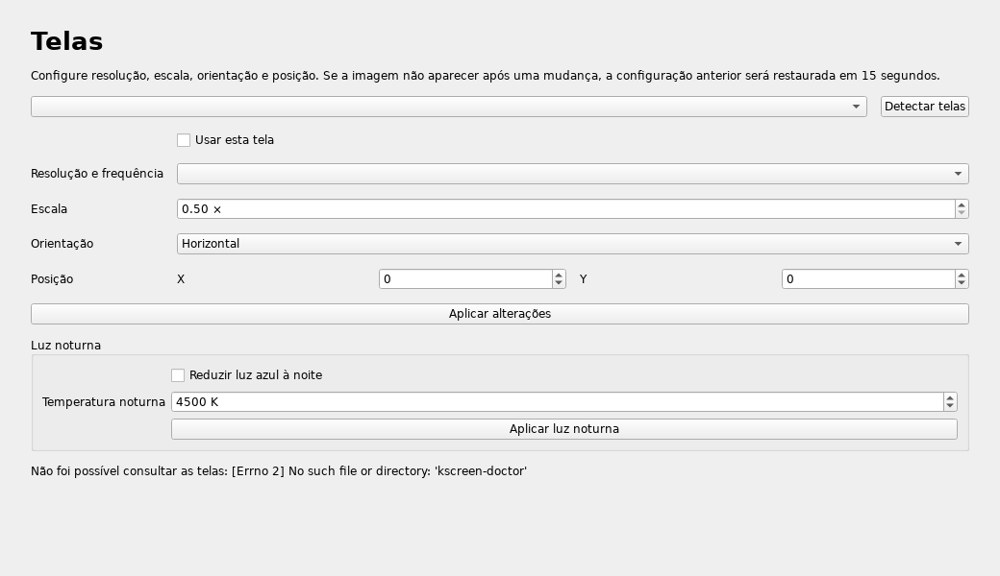

Na Central do Sistema, procure pelas configurações de monitor, áudio ou acessibilidade. Use o seletor de saída para trocar entre caixas de som e fones. Na seção de entrada de áudio, escolha o microfone e confira o indicador de nível.
Antes de uma chamada, abra Testar câmera e microfone nas Configurações. Selecione os dispositivos e clique em Iniciar teste. A prévia e o nível de áudio são mostrados na própria janela.
Em Energia e bateria → Relatório de bateria, consulte as capacidades e os ciclos informados pelo equipamento. Use Registrar leitura inicial para comparar a estimativa de saúde em consultas posteriores.
